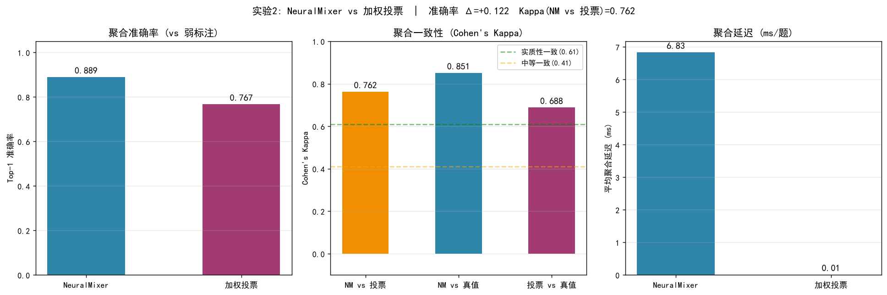

让职业素养训练，从“讲授”走向“对抗”
计算机类学生缺的不是一门课，而是一个可以反复较真的对手
职业素养——技术判断的边界、对证据的尊重、在被追问时守住结论的能力——很难靠一次性讲授形成。“芒得很职”把这套训练放进一个可以多轮运行的对抗环境：学生在真实技术语境中完成任务、接受质疑、被要求举证，系统记录全过程并给出可回看的评价依据。
平台基于 MARS-408 多智能体底座，由 11 个职责分离的 LangGraph 节点协同驱动，覆盖问题受理、学情诊断、路径规划、生成、评核与质量把关的完整链路；前端 45 个视图把诊断、实训、复盘与证据回看组织成一条连贯的教学动线，后端以 Python FastAPI 提供约 240 个 API 端点。
我们的工程原则只有一条：每一个对外宣称的能力，都必须能被一组可复跑的脚本与一份留存的实验结果文件追溯到源头。本页所有数字均标注了出处与口径；没有达到显著性的结论，我们同样标注出来。

一条可审计的智能体流水线
11 个节点，每一步都留下证据
后端采用 Python FastAPI，由 LangGraph 编排 11 个职责单一、状态显式传递的节点：triage（问题受理与分级）、coordinator（任务协调）、diagnostician（学情诊断）、planner（方案编排）、retriever（检索取证）、generator_cluster（多方案并行生成）、assessor（评分）、critic（批判性复核）、evidence_check（证据一致性校验）、quality_gate（质量闸）、path_planner（学习路径规划）。节点之间不隐藏上下文，任何一次生成都能回溯到它引用的检索结果与评判记录。
知识与检索层由三部分构成：本地部署的 E5-base-v2（768 维）嵌入模型负责向量化，知识库共 2122 个向量；知识图谱承载 86 个节点、82 条先修依赖边，用于约束推荐顺序与诊断归因；大模型通道采用 DeepSeek 主通道 + 讯飞 Spark generalv3.5 兜底的双路设计，主通道不可用时自动降级，保证实训过程不中断。


把“有用没用”变成可计算的量
三项技术要点，以及我们对结果的一一标注
（一）面向质量的检索策略（FrugalRAG）
我们在 28 条查询的标准口径下，把该策略与全量检索做对照，三个检索质量指标同时提升：Recall@5 +7.14 pp、Precision@5 +15.71 pp、MRR +12.38 pp。需要如实说明：这是一项质量组件，不是成本组件——在同一口径下它的 token 消耗上升 11.99%、单次延迟为 574.36 ms（全量检索 2.70 ms，约 213 倍）。我们对外不宣称降本或提速，只宣称检索质量提升，并把它定位为“以可接受的开销换取可被核查的答案依据”。
（二）三元评审权重的解析式求解
评分环节的权重组合不依赖拟合，而是解析式求解：capture 100%、零训练。这意味着权重决策是可推导、可复算的，而不是一次黑箱调参的产物。
（三）共识组件 NeuralMixer：一个负结果
我们在 96 条样本构成的权威评测上比较了训练权重（80.2%）与规则基线（82.3%），结论是持平。早期 30 题小样本曾给出更乐观的差异，已被更大样本否定，该数字不再使用。把这件事写进项目主页，是因为工程可信度来自如实报告。

（四）职业素养对抗实训
当前的对抗实训模块是 v1 规则原型；与 MAPPO 等强化学习策略相关的结论来自合成环境，不构成真实教学场景下的效果证明。
可复跑的证据
28 条查询、96 条样本、917 条通过用例
工程可信度不靠形容词。本页列出三组可直接复现的实测记录。检索对照实验：28 条查询，Recall@5 +7.14 pp、Precision@5 +15.71 pp、MRR +12.38 pp，结果文件 py-server/experiments/results/benchmark_2026-09-18.json，伴随 token 消耗上升 11.99%（未降反增）与单次延迟 574.36 ms 的诚实披露。共识评测：96 条样本下训练权重 80.2% 与规则基线 82.3% 持平，结论为“未观察到显著优势”。回归测试：917 条用例通过、207 条跳过（跳过项一般为依赖外部服务或需本地模型的用例，不计入通过率分母）。
检索对照实验（28 条查询标准口径）
- Recall@5 +7.14 pp
- Precision@5 +15.71 pp
- MRR +12.38 pp
- token 消耗 +11.99%（未降反增）
- 单次延迟 574.36 ms（全量检索 2.70 ms，约 213 倍）
- 结果文件 py-server/experiments/results/benchmark_2026-09-18.json
共识评测（96 条样本）
- 训练权重（NeuralMixer） 80.2%
- 规则基线 82.3%
- 结论 持平，未观察到显著优势
回归测试
- 通过用例 917 条
- 跳过用例 207 条
- 口径 跳过项一般为依赖外部服务或需本地模型的用例，不计入通过率分母

获取与运行
源码运行，无需安装包
芒得很职当前以源码形式提供，安装包正在制作中——完成后会提供下载安装、开箱即用的方式，无需准备任何开发环境。在此之前，仓库内已附带一键启动绿色包（deploy/），它会先做前置自检再拉起服务，你可以用它在本地完整运行全部功能。
步骤：
- 准备环境：安装 Python 3.12 或更高版本；Node.js 可选，缺失时可直接使用仓库中预构建的前端产物
dist/。 - 获取源码：
git clone https://github.com/TrueFurina/MARS-408.git && cd MARS-408 - 一次性准备：在
py-server/下执行uv sync --frozen创建虚拟环境（依据uv.lock）；若本地缺少 E5 embedding 模型，再执行python ../scripts/fetch_e5_model.py。这两步只在首次运行前需要。 - 一键启动：Windows 执行
deploy\start_windows.bat；Linux / macOS / WSL / Git Bash 执行bash deploy/start_linux.sh。脚本会依次自检 Python 版本、虚拟环境、模型与 8002 端口占用，任一项不满足即明确报错并停下，不会替你杀掉别人的进程。 - 等待初始化：脚本轮询健康端点
/api/status，最长等待 60 秒（首次启动需加载 embedding 模型，约 30 秒）。 - 开始使用：浏览器访问
http://127.0.0.1:8002；交互式接口文档位于http://127.0.0.1:8002/docs。 - 停止服务：Linux / macOS 执行
pkill -f "uvicorn main:app"；Windows 直接关闭启动窗口。
git clone https://github.com/TrueFurina/MARS-408.git && cd MARS-408
# 一次性准备（虚拟环境 + embedding 模型）
cd py-server && uv sync --frozen
python ../scripts/fetch_e5_model.py # 仅当 py-server/models/e5-base-v2 缺失时
cd ..
# Windows
deploy\start_windows.bat
# Linux / macOS / WSL / Git Bash
bash deploy/start_linux.sh授权与合规声明
我们对每一句宣称负责
本站点为芒得很职的产品说明页，内容以代码仓库为准。
口径约束：本站所有量化结论均以指定的实验结果文件与测试报告为准；未经验证的口头或历史数字一律不使用。“芒得很职”为产品名，MARS-408 为本产品的技术底座代号，不单独指代产品。
能力边界：职业素养对抗实训模块为 v1 规则原型；MAPPO / 强化学习相关结论来自合成环境，不代表真实教学增益；本产品未提供任何用于高利害决策的评价结论。
第三方组件：大模型通道使用 DeepSeek 与讯飞 Spark generalv3.5 的在线服务，嵌入模型 E5-base-v2 为本地部署；各组件的商标与服务条款归各自权利人所有。
反馈渠道：发现数据口径不一致或页面错误，请在 GitHub Issues 提交。